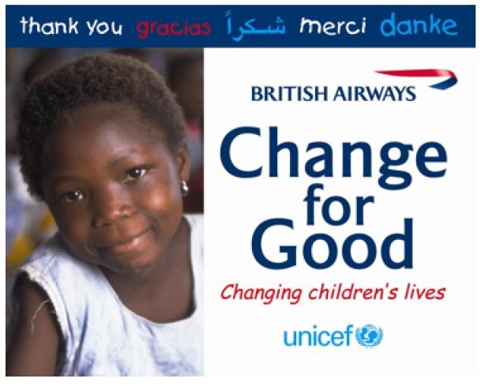
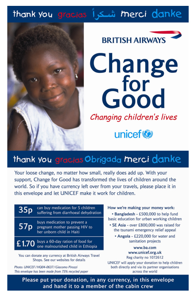
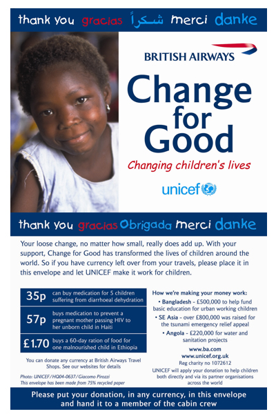

UNICEF: a campanha Change for Good® - da série de casos traduzidos da SOFII
13 de Abril de 2018 às 06:00
Ponto de vista da SOFII
Esta é uma das campanhas mais conhecidas do mundo: a Change for Good® é vista sempre que as pessoas voam em muitas das companhias aéreas mais conhecidas e mais utilizadas do mundo. Por mais de 15 anos, a UNICEF arrecadou muitos milhões para as crianças mais pobres do mundo, da simples, mas brilhante idéia de arrecadar as moedas estrangeiras indesejadas dos viajantes. A administração do esquema é feita pelas companhias aéreas parceiras e a UNICEF assegura sua contínua motivação entusiasta por meio de um programa cuidadosamente planejado de visitas ao campo pelas equipes aéreas selecionadas.
Área de atuação
Pobreza / justiça social
Meio de comunicação
Diálogo direto
Público alvo
Indivíduos, empresas
Resumo / objetivos
Change for Good® é uma parceria entre a UNICEF e a indústria aérea internacional. Esta iniciativa destina-se a coletar moedas estrangeiras normalmente desperdiçadas de viajantes e convertê-las em materiais e serviços que salvam vidas para algumas das crianças mais necessitadas do mundo. As arrecadações do Change for Good® são realizadas por 10 companhias aéreas: Aer Lingus, Alitalia, All Nippon Airways (ANA), American Airlines, Asiana Airlines, British Airways, Cathay Pacific, Finnair, JAL e QUANTAS.
Características especiais
O conceito básico é o mesmo em todas as companhias aéreas - o pessoal da companhia em voos internacionais recolhe notas e moedas sobressalentes em envelopes da Change for Good®. Os vídeos que passam durante o vôo com celebridades que apoiam a UNICEF informam os passageiros do programa e convida os a contribuir com o dinheiro que poderia, de outra forma, nunca ser usado novamente. Equipes de cabine são os campeões da Change for Good, veem os resultados de suas captações e visitam alguns dos programas que recebem fundos da campanha Change for Good®.
Influência / impacto
Change for Good® é bem sucedida em vários níveis. A ação arrecada milhões de dólares anualmente para crianças ao redor do mundo, permite que a UNICEF comunique sua mensagem em nome das crianças a uma audiência global cativa e mostra o compromisso dos parceiros aéreos com a responsabilidade social, aumentando assim a fidelidade do cliente. Bem como fornece ao pessoal da companhia aérea uma maneira fácil de ajudar as crianças enquanto realizam seu trabalho diário e possibilita aos passageiros uma maneira fácil e eficaz de doar enquanto viajam.
Resultados
Desde 1991, mais de US$ 70 milhões foram arrecadados para as crianças do mundo todo através do Change for Good®.
Méritos
O principal desta iniciativa é o simples fato de que as pessoas que viajam tem moedas ou notas estrangeiras que provavelmente não usarão novamente. Trabalhando com algumas das companhias aéreas líderes mundiais e seus funcionários, a UNICEF encontrou uma maneira de transformar esse dinheiro normalmente desperdiçado em milhões e milhões de dólares para crianças. O fato de que isso ainda está funcionando fortemente 15 anos depois é a prova do seu apelo.

Esta é uma das campanhas mais conhecidas do mundo: a Change for Good® é vista sempre que as pessoas voam em muitas das companhias aéreas mais conhecidas e mais utilizadas do mundo. Por mais de 15 anos, a UNICEF arrecadou muitos milhões para as crianças mais pobres do mundo, da simples, mas brilhante idéia de arrecadar as moedas estrangeiras indesejadas dos viajantes. A administração do esquema é feita pelas companhias aéreas parceiras e a UNICEF assegura sua contínua motivação entusiasta por meio de um programa cuidadosamente planejado de visitas ao campo pelas equipes aéreas selecionadas.
Área de atuação
Pobreza / justiça social
Meio de comunicação
Diálogo direto
Público alvo
Indivíduos, empresas
Resumo / objetivos
Change for Good® é uma parceria entre a UNICEF e a indústria aérea internacional. Esta iniciativa destina-se a coletar moedas estrangeiras normalmente desperdiçadas de viajantes e convertê-las em materiais e serviços que salvam vidas para algumas das crianças mais necessitadas do mundo. As arrecadações do Change for Good® são realizadas por 10 companhias aéreas: Aer Lingus, Alitalia, All Nippon Airways (ANA), American Airlines, Asiana Airlines, British Airways, Cathay Pacific, Finnair, JAL e QUANTAS.
Características especiais
O conceito básico é o mesmo em todas as companhias aéreas - o pessoal da companhia em voos internacionais recolhe notas e moedas sobressalentes em envelopes da Change for Good®. Os vídeos que passam durante o vôo com celebridades que apoiam a UNICEF informam os passageiros do programa e convida os a contribuir com o dinheiro que poderia, de outra forma, nunca ser usado novamente. Equipes de cabine são os campeões da Change for Good, veem os resultados de suas captações e visitam alguns dos programas que recebem fundos da campanha Change for Good®.
Influência / impacto
Change for Good® é bem sucedida em vários níveis. A ação arrecada milhões de dólares anualmente para crianças ao redor do mundo, permite que a UNICEF comunique sua mensagem em nome das crianças a uma audiência global cativa e mostra o compromisso dos parceiros aéreos com a responsabilidade social, aumentando assim a fidelidade do cliente. Bem como fornece ao pessoal da companhia aérea uma maneira fácil de ajudar as crianças enquanto realizam seu trabalho diário e possibilita aos passageiros uma maneira fácil e eficaz de doar enquanto viajam.
Resultados
Desde 1991, mais de US$ 70 milhões foram arrecadados para as crianças do mundo todo através do Change for Good®.
Méritos
O principal desta iniciativa é o simples fato de que as pessoas que viajam tem moedas ou notas estrangeiras que provavelmente não usarão novamente. Trabalhando com algumas das companhias aéreas líderes mundiais e seus funcionários, a UNICEF encontrou uma maneira de transformar esse dinheiro normalmente desperdiçado em milhões e milhões de dólares para crianças. O fato de que isso ainda está funcionando fortemente 15 anos depois é a prova do seu apelo.

Notícias mais populares
Gestão
Em agosto de 2017, a revista ÉPOCA e o Instituto Doar divulgaram a primeira ediç&...
Contexto e tendências
Criado para tornar mais transparentes as parcerias entre a administração públic...
Profissional captador
A captação de recursos é fundamental para a sustentabilidade de uma organiza&cc...